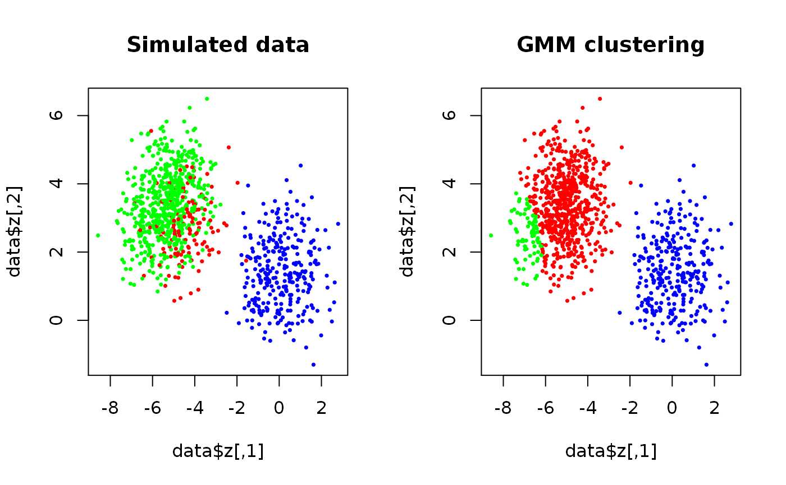

The regular expectation-maximization algorithm for general multivariate Gaussian mixture models.
EMAlgorithm(x, theta, m, eps = 1e-06, max.ite = 1e+05, trace.theta = FALSE, verbose = FALSE)
| x | A |
|---|---|
| theta | A list of parameters of class |
| m |
|
| eps | The maximal required difference in successive likelihoods to establish convergence. |
| max.ite | The maximum number of iterations. |
| trace.theta | Logical. If |
| verbose | Set to |
A list of length 3 with elements:
A list of the estimated parameters as described in
rtheta.
A numeric vector of the log-likelihood trace.
A matrix where kappa[i,j] is the probability that
x[i, ] is realized from the j'th component.
Though not as versatile, the algorithm can be a faster alternative
to Mclust in the mclust-package. If theta is not given,
a k-means clustering is used to determine the initial theta.
Anders Ellern Bilgrau <anders.ellern.bilgrau@gmail.com>
set.seed(3) true.theta <- rtheta(d = 2, m = 3, method = "old") true.theta$sigma <- lapply(true.theta$sigma, cov2cor) # Scale if (FALSE) { plot(true.theta, nlevels = 20, add.ellipses = TRUE) } data <- SimulateGMCMData(n = 1000, theta = true.theta) start.theta <- rtheta(d = 2, m = 3) start.theta$mu <- t(kmeans(data$z, 3)$centers) # More sensible location estimates start.theta <- as.theta(start.theta) # Coerce the matrix to a list res <- GMCM:::EMAlgorithm(data$z, theta = start.theta) par(mfrow = c(1,2)) plot(data$z, cex = 0.5, pch = 16, main = "Simulated data", col = rainbow(3)[data$K]) plot(data$z, cex = 0.5, pch = 16, main = "GMM clustering", col = rainbow(3)[apply(res$kappa,1,which.max)])